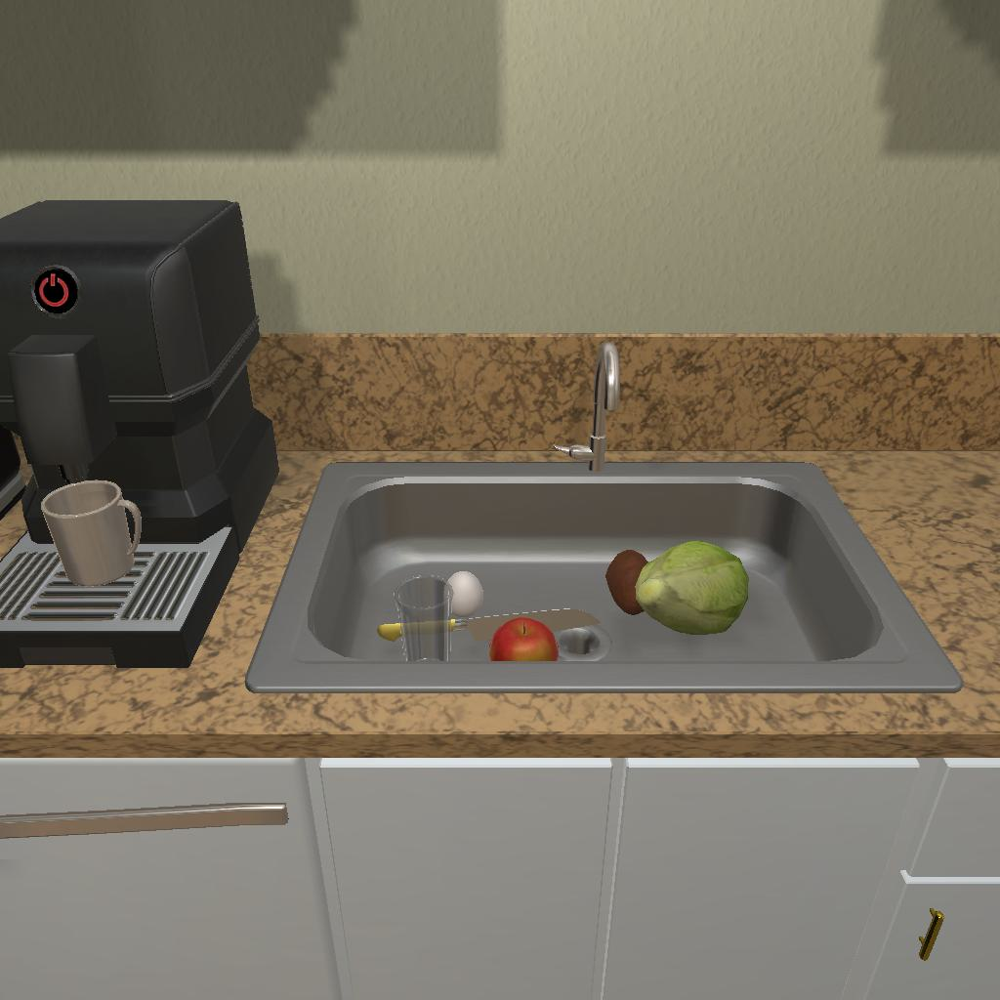

---------------------------------------------------------task: 18---------------------------------------------------------
--------------------------------------------------------------------------------------------------------------------------------------------------------------------
--------------------------------------------------------------------------------------------------------------------------------------------------------------------
Step:--------------------------------------------------------------------------1-------------------------------------------------------------------------------
----------------------------------------
VLM Prompt:
Image1:
Image2:
**Instruction**
1. Analyze the provided images to identify all visible household objects and compare the difference between images (e.h. whether the object is opened or not and taken on hand or not), focusing on those relevant to the task description "put a cool pot in cabinet."
2. Use the analysis of images and the task hint "The agent must find an object of the desired type, pick it up, go to a fridge, cool the object with the fridge, then find the correct location to place it, and put it down there. The agent does not need to use the fridge button or open the fridge to cool the object, and the agent just needs to do action that is "cool the object with the fridge"." to answer the question: what is the most reasonable action in the choices for the task description "put a cool pot in cabinet"?
3. Decide and write the answer using the template: The answer is: (i): , where i is the real number. If there is no desired object in images, search every place based on **Initial Observation** to find the object. And if no one is exactly correct, choose a similar answer.
**Initial Observation**
You are in the middle of a room. Looking quickly around you, you can see cabinet (1-20), countertop (1-3), coffeemachine (1), toaster (1), sink (1), fridge (1), microwave (1), garbagecan (1), drawer (1-3), sinkbasin (1), stoveburner (1-4), shelf (1-3)
**Answer Choices**
(1): go to cabinet 1
(2): go to cabinet 2
(3): go to cabinet 3
(4): go to cabinet 4
(5): go to cabinet 5
(6): go to cabinet 6
(7): go to countertop 1
(8): go to coffeemachine 1
(9): go to cabinet 7
(10): go to toaster 1
(11): go to cabinet 8
(12): go to sink 1
(13): go to fridge 1
(14): go to microwave 1
(15): go to garbagecan 1
(16): go to cabinet 9
(17): go to cabinet 10
(18): go to countertop 2
(19): go to cabinet 11
(20): go to cabinet 12
(21): go to drawer 1
(22): go to countertop 3
(23): go to drawer 2
(24): go to cabinet 13
(25): go to sinkbasin 1
(26): go to cabinet 14
(27): go to drawer 3
(28): go to stoveburner 1
(29): go to stoveburner 2
(30): go to stoveburner 3
(31): go to cabinet 15
(32): go to stoveburner 4
(33): go to cabinet 16
(34): go to cabinet 17
(35): go to cabinet 18
(36): go to cabinet 19
(37): go to cabinet 20
(38): go to shelf 1
(39): go to shelf 2
(40): go to shelf 3
**Answer**
Let's think step by step by following the instructions.
----------------------------------------
----------------------------------------
Original Response:
Firstly, analyze the provided images. There is no visible pot or cabinet in either Image1 or Image2, so there is no difference in the state of these objects between the images.
Secondly, according to the task description and hint, the agent needs to find a pot, pick it up, go to the fridge to cool it without needing to open the fridge or use its button, then find the correct cabinet to place the cooled pot.
Based on the initial observation, we know there are multiple cabinets available in the room. Since we cannot see any pot in the images, the agent must search every place to find the pot.
The most reasonable action from the provided choices that aligns with the task description "put a cool pot in the cabinet" would be to first find the pot. As none of the answer choices directly involve finding or picking up a pot, the agent must choose an action that could lead to finding the object, which is likely located in a cabinet or on a countertop.
Since we do not know the exact location of the pot and assuming the agent starts searching from the beginning, the most logical first step would be to go to the closest storage area, which would be cabinet 1.
The answer is: (1): go to cabinet 1.
----------------------------------------
----------------------------------------
>>> Refine Original VLM Response and Get Pure Action: go to cabinet 1
----------------------------------------
-----------------------------------------------------------------
Running time: 11.030132055282593 seconds
Total Money: 10.615060000000001
-----------------------------------------------------------------
-----------------------------------------------------------------
Text Observation:You arrive at loc 0. The cabinet 1 is closed.
-----------------------------------------------------------------
UNSUCCEED